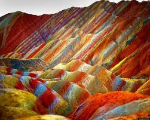
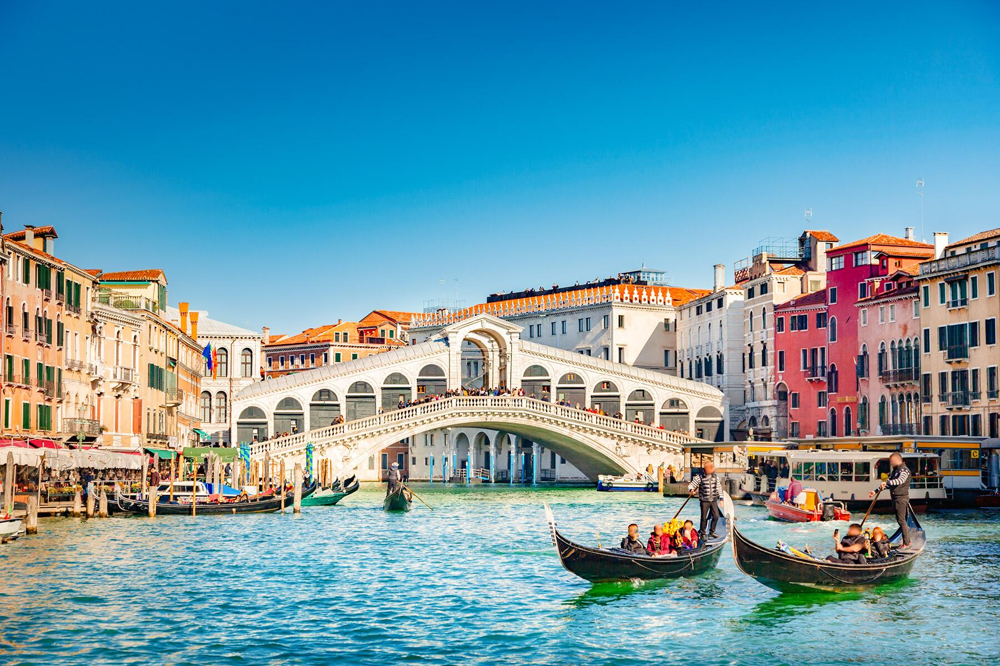
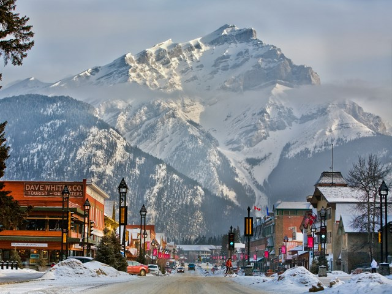
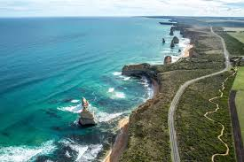
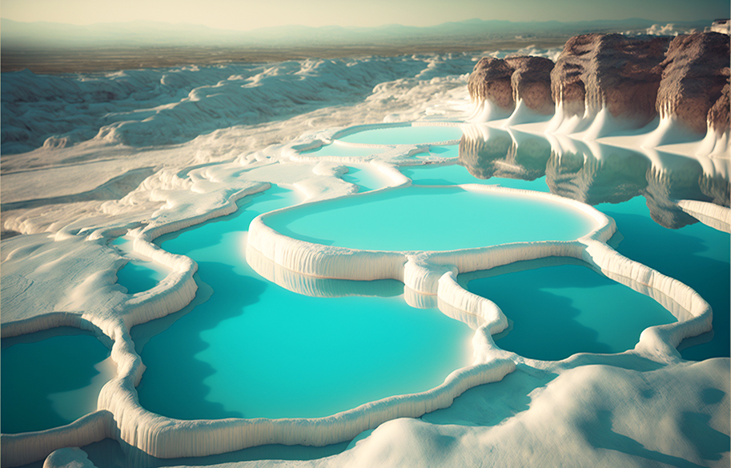

Sumaya - 2024
Welcome to my website
My favourite place
-

Zhangye Danxia Geopark, China
- Zhangye National Geopark is located in Sunan and Linze counties
within the prefecture-level city of Zhangye, in Gansu, China.
It covers an area of 322 square kilometres.
The site became a quasi-national geopark on 23 April 2012.

Venice, Italy
- Venice, the capital of northern Italy’s Veneto region,
is built on more than 100 small islands in a lagoon in
the Adriatic Sea. It has no roads, just canals – including
the Grand Canal thoroughfare – lined with Renaissance and Gothic palaces.
The central square, Piazza San Marco, contains St. Mark’s Basilica,
which is tiled with Byzantine mosaics, and the Campanile bell tower offering views of the city’s red roofs.

Banff National Park, Canada
- Banff is a resort town in the province of Alberta,
located within Banff National Park. The peaks of Mt.
Rundle and Mt. Cascade, part of the Rocky Mountains,
dominate its skyline. On Banff Avenue, the main thoroughfare,
boutiques and restaurants mix with château-style hotels and souvenir shops.
The surrounding 6,500 square kilometres of parkland are home to wildlife including elk and grizzly bears.

Great Ocean Road, Australia
- The Great Ocean Road is an Australian National Heritage-listed
240-kilometre stretch of road along the south-eastern coast of Australia,
between the Victorian towns of Torquay and Allansford

Pamukkale, Turkey
- Pamukkale is a town in western Turkey known for the mineral-rich thermal
waters flowing down white travertine terraces on a nearby hillside.
It neighbors Hierapolis, an ancient Roman spa city founded around 190 B.C.
Ruins there include a well-preserved theater and a necropolis with sarcophagi that stretch for 2km.
The Antique Pool is famous for its submerged Roman columns, the result of an earthquake